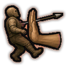
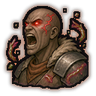
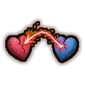
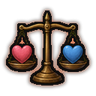
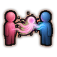
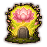
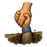

Technique trees › Universal ninjutsu
Contract bonds
13 techniques in the Ninjutsu tab.
Open to every ninja. How high a ninja can go depends on their ninja build.
Ritual of the Contract Bonds D
Chakra 10. D-rank. Two of your own people bind their souls together. Each person can have one bond; it lasts for life. Target the partner.
Ritual of the Contract Bonds D
Chakra 10. D-rank. Two of your own people bind their souls together. Each person can have one bond; it lasts for life. Target the partner.
D-rank. Two of your own people bind their souls together. Each person can have one bond; it lasts for life. Target the partner.
| Rank | Chakra | Cooldown | Class level |
|---|---|---|---|
| D | 10 | 1 day | 2 |
Mind Link D
Chakra 10. D-rank. Share thoughts with the bonded partner at any distance: both feel better for a day.
Mind Link D
Chakra 10. D-rank. Share thoughts with the bonded partner at any distance: both feel better for a day.
D-rank. Share thoughts with the bonded partner at any distance: both feel better for a day.
| Rank | Chakra | Cooldown | Class level |
|---|---|---|---|
| D | 10 | 12 hours | 2 |
Distress Call D
Passive. D-rank passive. Feels it the moment the bonded partner is downed or killed, wherever they are.
Distress Call D
Passive. D-rank passive. Feels it the moment the bonded partner is downed or killed, wherever they are.
D-rank passive. Feels it the moment the bonded partner is downed or killed, wherever they are.
Chakra Gift DCBAS
Chakra 10 to 90. D/C/B/A/S-rank. Pour chakra into the bonded partner within 30 cells: D 10%, C 20%, B 30%, A 40%, S 50% of the giver's maximum.
Chakra Gift DCBAS
Chakra 10 to 90. D/C/B/A/S-rank. Pour chakra into the bonded partner within 30 cells: D 10%, C 20%, B 30%, A 40%, S 50% of the giver's maximum.
D/C/B/A/S-rank. Pour chakra into the bonded partner within 30 cells: D 10%, C 20%, B 30%, A 40%, S 50% of the giver's maximum.
| Rank | Chakra | Cooldown | Class level |
|---|---|---|---|
| D | 10 | 1 hour | 2 |
| C | 20 | 1 hour | 5 |
| B | 35 | 1 hour | 9 |
| A | 55 | 1 hour | 13 |
| S | 90 | 1 hour | 18 |

Protective Shove C
Chakra 20. C-rank. Knock the bonded partner out of harm's way: they land a few cells away from the nearest enemy, shaken free of stuns.
Protective Shove C
Chakra 20. C-rank. Knock the bonded partner out of harm's way: they land a few cells away from the nearest enemy, shaken free of stuns.
C-rank. Knock the bonded partner out of harm's way: they land a few cells away from the nearest enemy, shaken free of stuns.
| Rank | Chakra | Cooldown | Class level |
|---|---|---|---|
| C | 20 | 20 s | 5 |

Bond Fury B
Passive. B-rank passive. When the bonded partner is downed or killed, this person fights with wild strength for a while.
Bond Fury B
Passive. B-rank passive. When the bonded partner is downed or killed, this person fights with wild strength for a while.
B-rank passive. When the bonded partner is downed or killed, this person fights with wild strength for a while.

Pain Switch B
Chakra 35. B-rank. Take all of the bonded partner's pain onto yourself for an hour.
Pain Switch B
Chakra 35. B-rank. Take all of the bonded partner's pain onto yourself for an hour.
B-rank. Take all of the bonded partner's pain onto yourself for an hour.
| Rank | Chakra | Cooldown | Class level |
|---|---|---|---|
| B | 35 | 2 hours | 9 |
Bond Shield A
Chakra 55. A-rank. Wrap the bonded partner in your chakra: they take half damage for a short while.
Bond Shield A
Chakra 55. A-rank. Wrap the bonded partner in your chakra: they take half damage for a short while.
A-rank. Wrap the bonded partner in your chakra: they take half damage for a short while.
| Rank | Chakra | Cooldown | Class level |
|---|---|---|---|
| A | 55 | 2.4 hours | 13 |

Wounded Balance A
Chakra 55. A-rank. Standing beside the bonded partner, heal 40 points of their wounds and take half of that onto yourself.
Wounded Balance A
Chakra 55. A-rank. Standing beside the bonded partner, heal 40 points of their wounds and take half of that onto yourself.
A-rank. Standing beside the bonded partner, heal 40 points of their wounds and take half of that onto yourself.
| Rank | Chakra | Cooldown | Class level |
|---|---|---|---|
| A | 55 | 1.6 hours | 13 |
Just a Little Longer A
Passive. A-rank passive. While the bonded partner is downed nearby or anywhere, their bleeding slows to a trickle.
Just a Little Longer A
Passive. A-rank passive. While the bonded partner is downed nearby or anywhere, their bleeding slows to a trickle.
A-rank passive. While the bonded partner is downed nearby or anywhere, their bleeding slows to a trickle.

Final Parting S
Chakra 90. S-rank. Only when near death (below 35% health): give everything left to fully heal the bonded partner's wounds. The giver dies.
Final Parting S
Chakra 90. S-rank. Only when near death (below 35% health): give everything left to fully heal the bonded partner's wounds. The giver dies.
S-rank. Only when near death (below 35% health): give everything left to fully heal the bonded partner's wounds. The giver dies.
| Rank | Chakra | Cooldown | Class level |
|---|---|---|---|
| S | 90 | 1 day | 18 |

Ultimate Sacrifice S
Chakra 90. S-rank. Within five minutes of the bonded partner's death, beside the body: give your life to bring them back.
Ultimate Sacrifice S
Chakra 90. S-rank. Within five minutes of the bonded partner's death, beside the body: give your life to bring them back.
S-rank. Within five minutes of the bonded partner's death, beside the body: give your life to bring them back.
| Rank | Chakra | Cooldown | Class level |
|---|---|---|---|
| S | 90 | 1 day | 18 |

Don't Leave Me S
Passive. S-rank passive. Final Parting and Ultimate Sacrifice leave this person downed instead of dead.
Don't Leave Me S
Passive. S-rank passive. Final Parting and Ultimate Sacrifice leave this person downed instead of dead.
S-rank passive. Final Parting and Ultimate Sacrifice leave this person downed instead of dead.
Chakra is the technique's base cost, the number in its def. In play it is multiplied by the pawn's chakra energy usage multiplier, which traits (chakra artificer 90%, volatile conduit 110%), World of Naruto genes and jutsu enhancements change, so the technique window can show a slightly different number for each ninja. Cooldowns are in-game time, as the technique window shows them, and the pawn's cooldown stat shortens or lengthens them. World of Naruto gives every ninja a base of 100 maximum chakra; genes and traits change it.